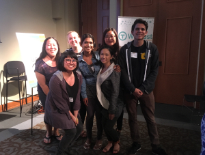

Hey there 👋🏼
Call me Kimberly
Photo by Ilona Panych
My multicultural upbringing as a 1.5 generation immigrant and Navy brat has largely shaped who I am today, both as a designer and as a person. I was born in the Philippines and spent my formative years in Japan, Nevada, and California. My experiences made me curious, empathetic, open-minded, and resilient. These traits I leverage to inform my creativity and the work I do.
My goal is to solve problems and make things better with intellect, intuition, and heart. By combining my design expertise, frontend code knowledge, and penchant for community organizing, I’ve been able to bring thoughtful ideas to life.
Right now, I’m seeking UX/Product Design roles in civic tech. I’d like to to be at an organization that serves marginalized and underserved communities to improve their quality of life. I’d love to contribute both creatively and analytically to a team’s design process.
Continual growth & learning
Kimberly soldering LED lights volunteering at Cymaspace

Winning hackathon team at Re:source Hackathon
In the beginning, a love for making art was the start. I became a designer through sheer will and quiet stubbornness to never fully “grow up.” My first design memories were from the early 2000s when I was addicted to designing Xanga layouts. I messed around with bootleg Photoshop and tweaked hodgepodge HTML/CSS. I risked sneaking into the computer room past my bedtime, then I’d muffle the dial-up modem with a pillow… all so I could launch a new layout design featuring my current favorite band. It was adorned with flowery swashes, distressed edges, and (probably) lyrics of "Mr. Brightside." I'd wake up the next day to new eProps and gushing comments from my little internet community.
After getting a Design degree from UC Davis, I worked as a graphic designer for a couple of years. Most recently, I helped make election materials and health documents more accessible to limited English speaking demographics and screen-reader users at a translation agency. There, I often wondered about how much of a difference I was making. Were people actually using these tools? What can we do better? My curiosity made me want to deepen my knowledge of people’s behaviors and apply human-centered design practices.
For over three years, I made a slow and steady transition into UX Design. I attended conferences to learn about issues surrounding tech and applied my learnings at hackathons. Eventually, I made the decision to pursue UX design full-on by enrolling in Bloc's Design Apprenticeship. Shortly after, I collaborated with a group of colleagues to establish a design learning community in Sacramento to share knowledge, experiences, and resources to help other designers grow.
Don’t be a stranger
I’m always down to collaborate or nerd out about design. Feel free to reach out!